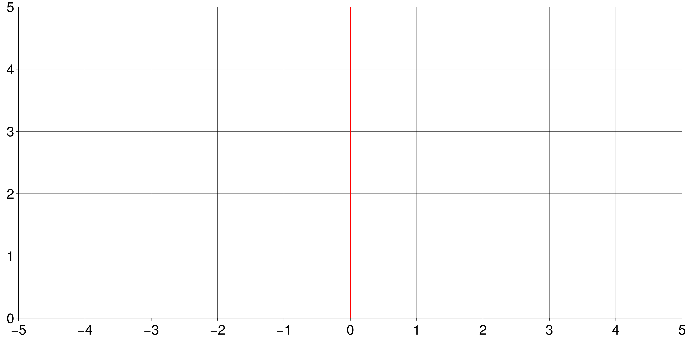

TheNumberLine.jl
The Number Line is a common teaching tool in e.g. K-12 math classes accross the U.S.
Authors: Gael Forget and Jane Chapin

The Random Turtle
In the random turtle activity we take a series of N consecutive, random, steps on the number line. Each step is either -1 (left) or +1 (right) based on a coin flip. We do this N times in a row (10 times for example) and observe our final value at the end (green arrow). All you need to do this is copy the following line to a new code cell and run it:
NumberLinePlot(rand((-1,1),10),path=".",filename="RandomTurtle.png")The activity basically is do this a bunch of times and discuss how results can vary .
Interactive Use
In your web-browser (see User Directions for detail) :
- type a number in the text box
- click on the
addbutton - repeat or reset
Repeat a few times, e.g. with other numbers, to obtain something like the image shown above. You can also hit start over at any point.
Histograms
This module provides a simple way to create an empty histogram that students can print and write over.
save_hist(make_hist(),file="hist.png")┌ Warning: Found `resolution` in the theme when creating a `Scene`. The `resolution` keyword for `Scene`s and `Figure`s has been deprecated. Use `Figure(; size = ...` or `Scene(; size = ...)` instead, which better reflects that this is a unitless size and not a pixel resolution. The key could also come from `set_theme!` calls or related theming functions.
└ @ Makie ~/.julia/packages/Makie/GWb7z/src/scenes.jl:227